| Rebecca (Larry & Mary Beth's oldest
daughter) and her husband Logan live in Glendive, MT. There is no
good way to get from Eureka to Glendive in mid December, so quite a few of
us opted to ride the Amtrak train over there. It was about a 9 hour
train ride to Wolf Point, followed by a 90 minute drive. It was an
adventure! The wedding was lovely and we were happy to be able
to attend. The trip home was crazy, partly because the temperatures
were extremely low, getting down to about -26 at several points during the
weekend. |
|
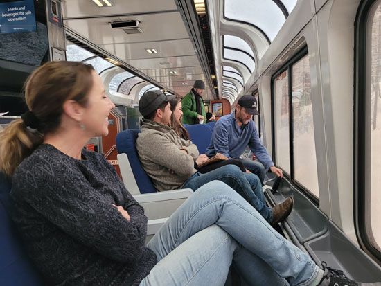 |
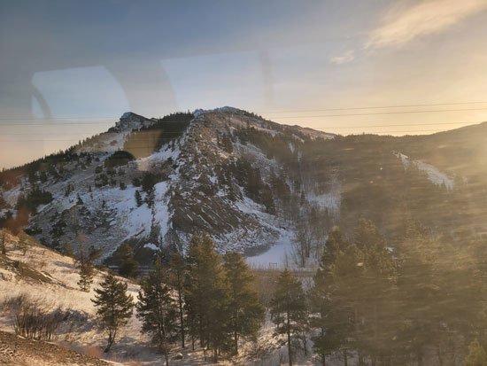 |
| The trip out there was magical. We spent a lot of the time in the
observation car, watching the sun come up over Glacier Park out the huge windows. |
I got some reflection on these pictures, but the scenery was just lovely. |
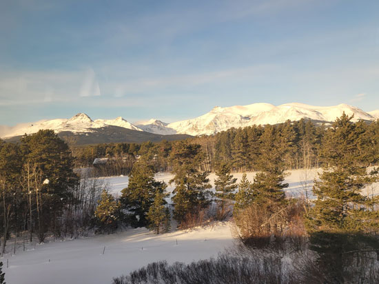 |
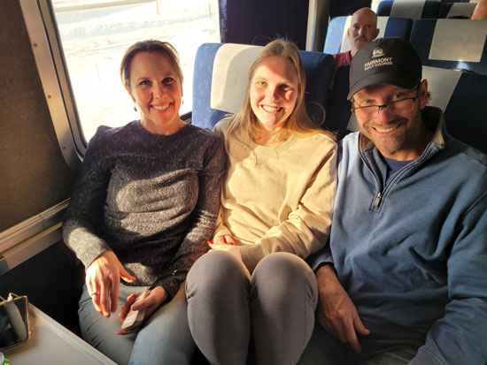 |
| More pretty views along the way. | Back at our seats, Amy, Madison, Jeb, and Eric are all enjoying the trip. |
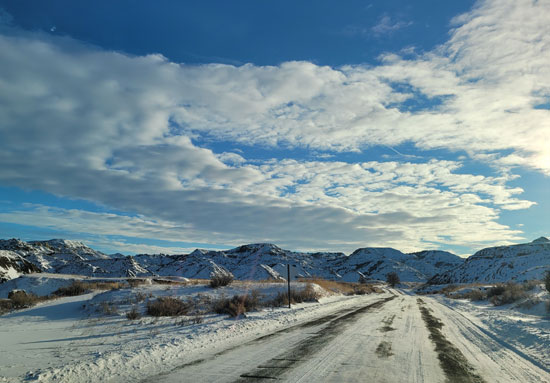 |
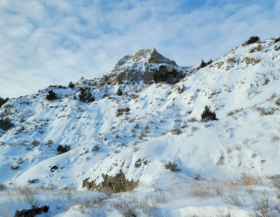 |
| The following day we head out to see some sights in Glendive. It was
especially fun because everywhere we went we ran into family members, all doing the same thing. |
These photos were taken in Makoshika State Park, a lovely spot right outside of town. |
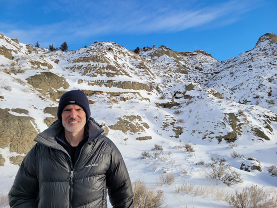 Eric, giving me his best "smile." |
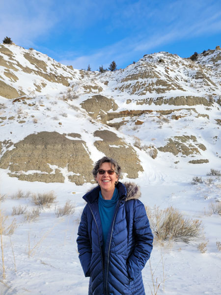 |
| I went a little too far the other way and made myself look like I was choking. | |
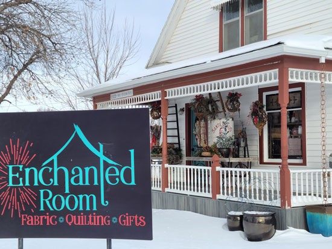 |
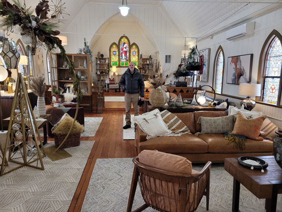 |
| My favorite spot in Glendive - a quilt shop! Thank you niece Kaitlyn for the heads up! | This furniture store is in a refurbished old church. Eric had a great
discussion with them about fixing up old buildings since we spent over a year doing that in Eureka. |
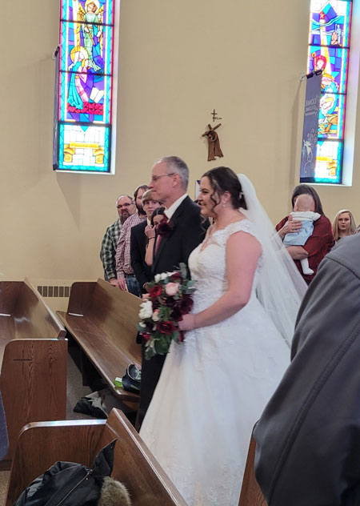 |
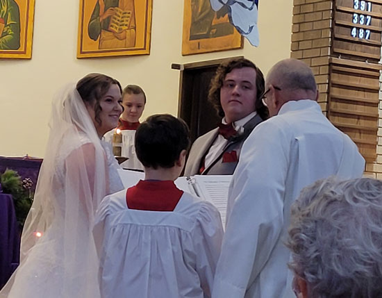 Grandpa Dan got to do part of the ceremony. |
| Wedding time! | |
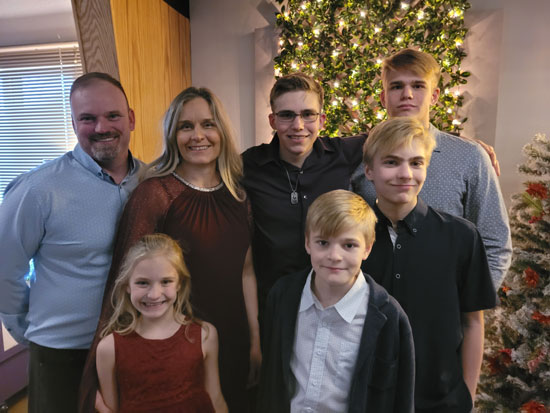 |
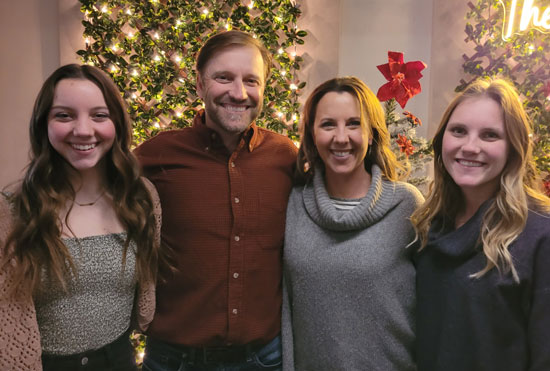 |
| At the reception, here's Lucas & Kristi's family. | Jeb & Amy's crew, minus Colter who didn't come to the wedding. |
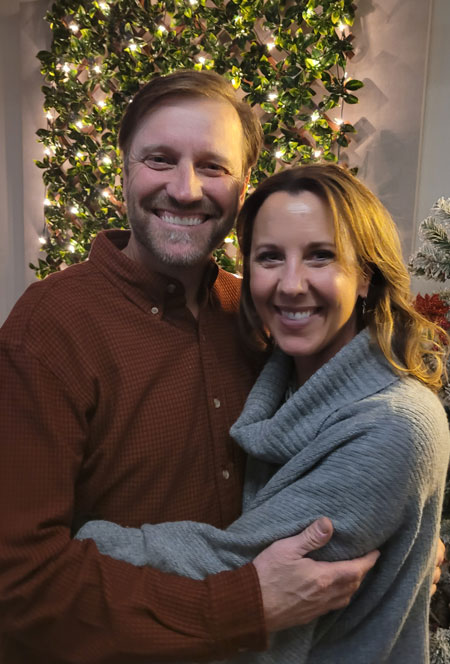 |
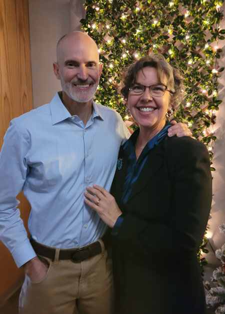 |
| Jeb & Amy | Me & E |
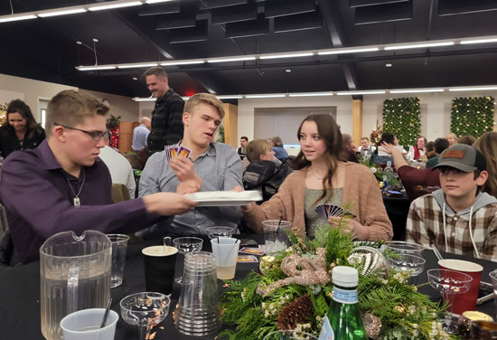 We had several hours to kill while waiting for the wedding party to
finish a photo shoot. |
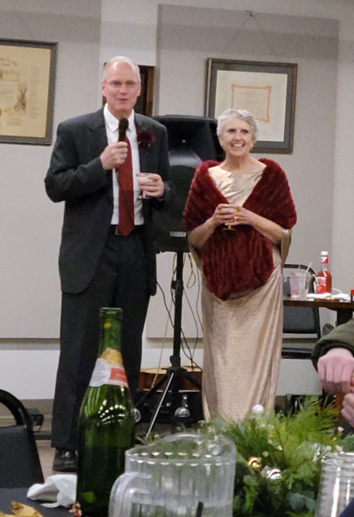 |
| Larry & Mary Beth giving their speeches. | |
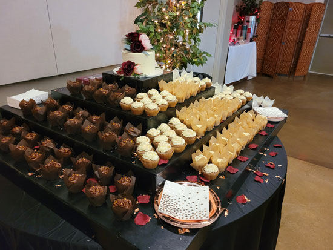 |
|
| Instead of wedding cake, they had this huge cupcake display. It was good! | |
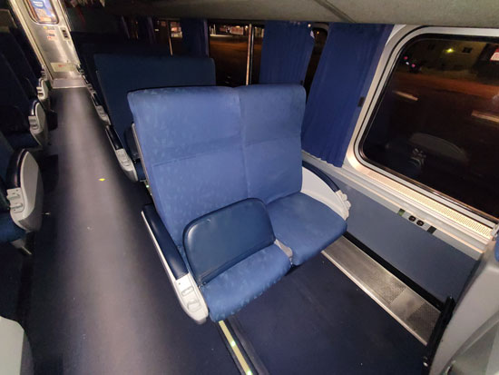 Scenes of the Amtrak train. I had never been on one before, so I took a couple of pictures. Unfortunately, the trip back was as bad as the trip out had been
good. I can't even begin |
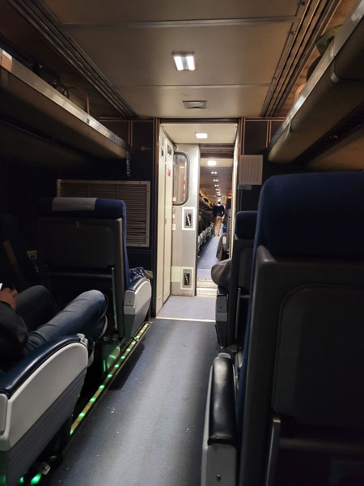 |
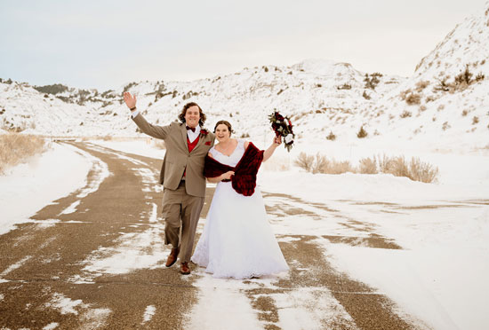 |
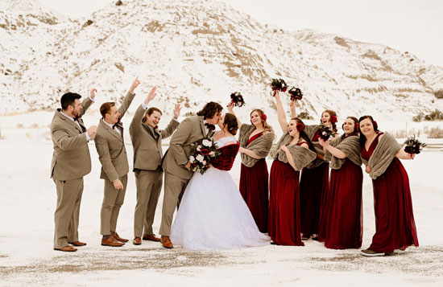 |
| Here are some of the professional photos from the event. | Keep in mind it was about -24 degrees at this point. Those were some tough girls! |
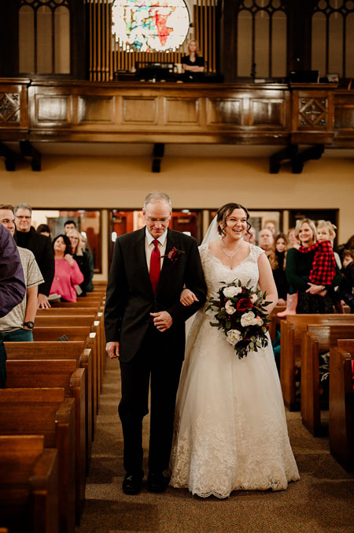 |
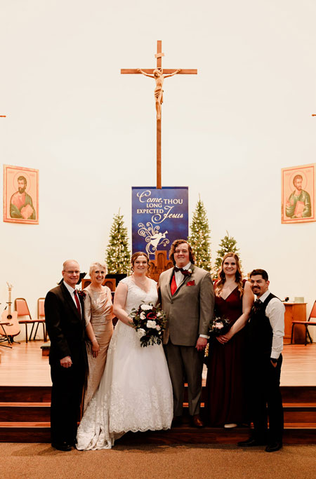 |
| Rebecca had a great time the entire day - no nerves at all. She's a fun person. | Larry, Mary Beth, Rebecca, Logan, Katie, and Caleb |